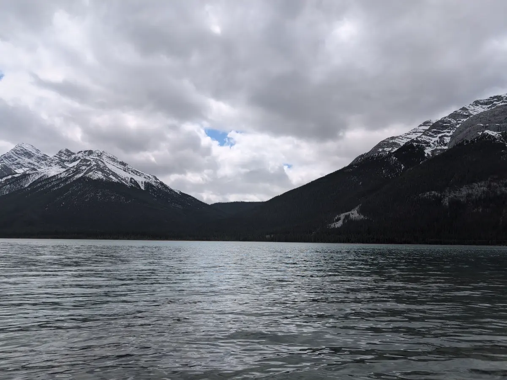
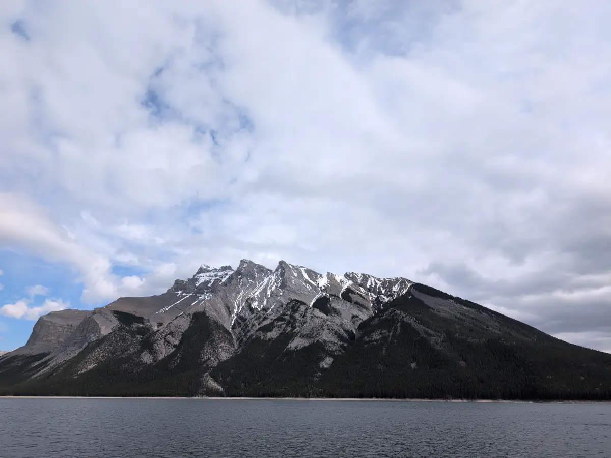

Banff Canadian National Park Travel Log: Day One
This blog post series is a direct transcript of the notes I took while visiting Banff National Park in Alberta, Canada. I left with my sister and a friend of ours on the 18th of May and returned on the 26th. I hope it inspires you to travel to the Rocky Mountains and have an adventure of your own. We will certainly be returning.
Monday, May 19th
Woke up at 11am MDT. Ate eggs before driving to the lakes near our hotel, taking photos of goats and elk (Caribou? Reindeer?) along the way. The Banff visitor center required paid entry to the park and was very busy due to our trip coinciding with Victoria Day. I was able to get some CAD$ nearby and buy a Banff pin for my collection before we grabbed lunch and some maps and leaving the shopping center. We visited Lake Louise, Lake Minnewanka, and an assortment of reservoirs and streams connecting them all.

I am glad I recently upgraded my phone for a nicer camera! On our way home we stopped at Safeway for groceries, saw some Columbian Ground Squirrels (we first mistook them for prarie dogs or marmots) and landed an actual parking spot in the basement of our hotel’s parking. Certainly an upgrade over our 2am corner spot the night we arrived. I exercised on the eliptical for an hour before dinner while some rowdy men played pool in the room beside me.

My sister was able to get Twilight on our TV with US Netflix thanks to my laptop’s VPN. Our friend had never seen it, and didn’t even know there were vampires in the movie! It was a great time. I was able to write some code for a personal project (stay tuned…) and wrote some postcards before heading to bed for an early morning.